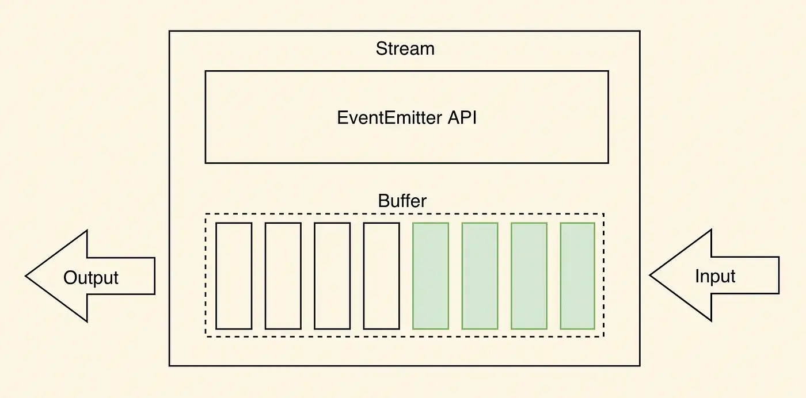
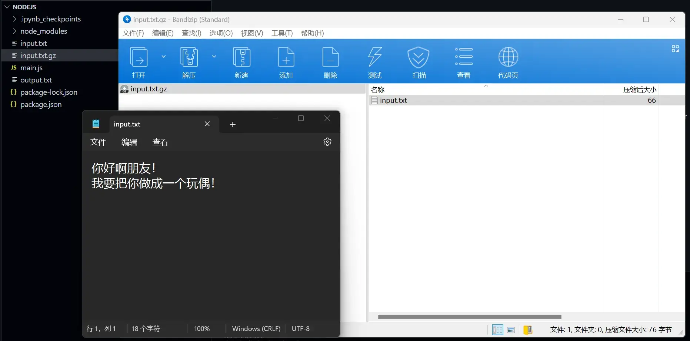
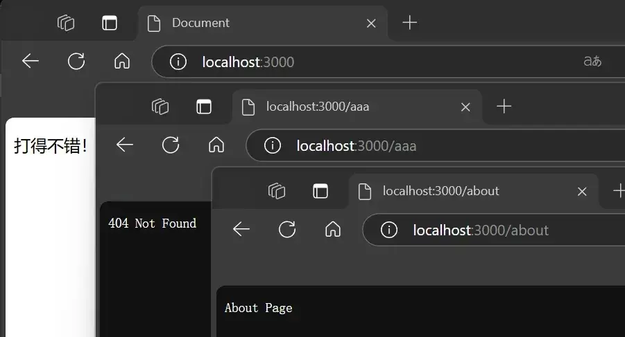
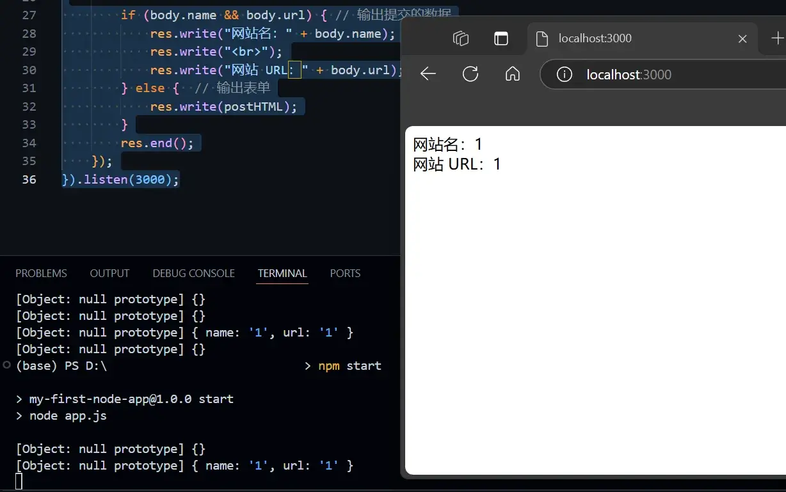
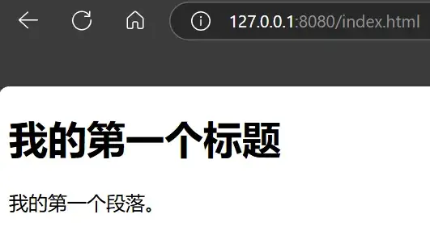

资源
Node.js 教程
教程
脚本模式 ：node helloworld.js。
交互模式 ：跟 Python 差不多的交互方式。
1 2 3 4 5 6 7 node> console.log("Hello, world!" ) >
创建第一个应用
创建一个 server.js：
1 2 3 4 5 6 7 8 9 10 11 12 13 14 15 var http = require ('http' ); createServer (function (req, res ) { writeHead (200 , {'Content-Type' : 'text/plain' });end ('Hello World\n' );listen (8888 , '127.0.0.1' );console .log ('Server running at http://127.0.0.1:8888/' );
启动它！
1 2 node server.js
客户端将收到 HTTP 响应，由 4 个部分组成：状态行、消息报头、空行和响应正文。响应正文内容如下：
1 2 <html > <head > <meta name ="color-scheme" content ="light dark" > </head > <body > <pre style ="word-wrap: break-word; white-space: pre-wrap;" > Hello World</pre > </body > </html >
NPM 使用介绍
NPM（Node Package Manager）是一个 JavaScript 包管理工具，也是 Node.js 的默认包管理器。
使用 npm 命令安装常用的 Node.js web 框架模块 express ：
1 2 3 4 5 6 npm install express
全局安装（后面加后缀 -g）：
1 2 3 npm install express -g
NPM 提供了很多命令，可以使用 npm help 可查看所有命令。
命令
说明
npm init初始化一个新的 package.json 文件，交互式输入信息。
npm init -y快速创建带有默认设置的 package.json 文件。
npm install package-name本地安装指定包。
npm install -g package-name全局安装指定包，使其在系统范围内可用。
npm install安装 package.json 中列出的所有依赖。
npm install package-name --save-dev安装包并添加到 devDependencies。
npm update package-name更新指定的依赖包。
npm uninstall package-name卸载指定的依赖包。
npm uninstall -g package-name全局卸载指定的包。
npm list查看当前项目的已安装依赖包列表。
npm list -g --depth=0查看全局已安装的依赖包列表（不展开依赖树）。
npm info package-name查看包的详细信息，包括版本和依赖等。
npm login登录到 NPM 账号。
npm publish发布当前包到 NPM 注册表。
npm unpublish package-name从 NPM 注册表中撤销发布的包（一般限 24 小时内）。
npm cache clean --force清理 NPM 缓存。
npm audit检查项目依赖中的安全漏洞。
npm audit fix自动修复已知的漏洞。
npm run script-name运行 package.json 中定义的脚本，例如 npm run start。
npm start运行 start 脚本（等同于 npm run start）。
npm test运行 test 脚本。
npm build运行 build 脚本。
npm outdated列出项目中有可更新版本的依赖包。
npm version patch/minor/major更新 package.json 中的版本号，自动更新版本。
npm ci使用 package-lock.json 快速安装依赖，适用于 CI/CD 环境。
REPL（交互式解释器）
就是个给 JS 用的命令行。
回调函数
Node.js 的核心特性之一是其非阻塞 I/O（输入/输出）模型，这使得 Node.js 非常适合处理高并发的网络应用。
Node.js 异步编程的直接体现就是回调 。
项目中创建一个文本文件 input.txt：
创建一个 main.js：
阻塞代码 非阻塞代码
1 2 3 4 5 6 var fs = require ('fs' ); var data = fs.readFileSync ('input.txt' , 'utf8' );console .log (data);console .log ("程序执行结束！" );
程序必须等待文件读取完成才会继续运行。
1 2 3 4 5 6 7 8 var fs = require ("fs" );readFile ('input.txt' , function (err, data ) {if (err) return console .error (err);console .log (data.toString ());console .log ("程序执行结束!" );
程序会继续运行，文件读取完成后由回调函数显示文件内容。
回调地狱（Callback Hell）
回调地狱 async/await Promises
当多个异步操作需要按顺序执行时，回调函数会导致代码嵌套，使得代码难以阅读和维护。
1 2 3 4 5 6 7 8 9 10 11 12 13 14 15 16 17 18 19 20 21 22 fs.readFile ('file1.txt' , 'utf8' , (err, data1 ) => {if (err) {console .error ('Error reading file1:' , err);return ;readFile ('file2.txt' , 'utf8' , (err, data2 ) => {if (err) {console .error ('Error reading file2:' , err);return ;readFile ('file3.txt' , 'utf8' , (err, data3 ) => {if (err) {console .error ('Error reading file3:' , err);return ;console .log ('Data from all files:' , data1, data2, data3);
async/await 是 ES2017 引入的语法糖，可以让你更方便地处理异步操作，避免回调地狱。
1 2 3 4 5 6 7 8 9 10 11 12 13 14 15 const fs = require ('fs' ).promises ;async function readFiles (try {const data1 = await fs.readFile ('file1.txt' , 'utf8' );const data2 = await fs.readFile ('file2.txt' , 'utf8' );const data3 = await fs.readFile ('file3.txt' , 'utf8' );console .log ('Data from all files:' , data1, data2, data3);catch (err) {console .error ('Error reading files:' , err);readFiles ();
Promises 是另一种处理异步操作的方式，可以链式调用 then 方法，避免嵌套回调。
1 2 3 4 5 6 7 8 9 10 11 12 13 14 15 16 17 const fs = require ('fs' ).promises ;readFile ('file1.txt' , 'utf8' )then (data1 =>console .log ('Data from file1:' , data1);return fs.readFile ('file2.txt' , 'utf8' );then (data2 =>console .log ('Data from file2:' , data2);return fs.readFile ('file3.txt' , 'utf8' );then (data3 =>console .log ('Data from file3:' , data3);catch (err =>console .error ('Error reading files:' , err);
事件循环
事件驱动程序
在 Node.js 中，事件驱动编程主要通过 EventEmitter 类来实现。
EventEmitter 是一个内置类，位于 events 模块中，通过继承 EventEmitter，你可以创建自己的事件发射器，并注册和触发事件。
Node.js 有多个内置的事件，我们可以通过引入 events 模块，并通过实例化 EventEmitter 类来绑定和监听事件，如下实例：
1 2 3 4 5 6 7 8 9 10 11 12 const EventEmitter = require ('events' );const myEmitter = new EventEmitter ();on ('greet' , () => {console .log ('Hello World!' );emit ('greet' );
另一个实例：
sequenceDiagram
participant User
participant EventEmitter
participant connectHandler
participant DataReceivedHandler
User->>EventEmitter: emit('connection')
EventEmitter->>connectHandler: 连接成功
connectHandler->>EventEmitter: emit('data_received')
EventEmitter->>DataReceivedHandler: 数据接收成功
DataReceivedHandler-->>User: 输出"数据接收成功。"
User->>User: 输出"程序执行完毕。"
1 2 3 4 5 6 7 8 9 10 11 12 13 14 15 16 17 18 19 20 21 22 23 24 25 var events = require ('events' );var eventEmitter = new events.EventEmitter ();var connectHandler = function connected (console .log ('连接成功。' );emit ('data_received' );on ('connection' , connectHandler);on ('data_received' , function (console .log ('数据接收成功。' );emit ('connection' );console .log ("程序执行完毕。" );
EventEmitter
events 模块只提供了一个对象： events.EventEmitter
EventEmitter 的核心就是事件触发与事件监听器功能的封装。
1 2 3 4 5 6 7 8 9 10 11 12 13 14 15 16 17 18 19 20 21 22 23 24 25 26 27 28 29 30 31 32 33 34 35 36 var events = require ('events' );var eventEmitter = new events.EventEmitter ();var listener1 = function listener1 (console .log ('监听器 listener1 执行。' );var listener2 = function listener2 (console .log ('监听器 listener2 执行。' );addListener ('connection' , listener1);on ('connection' , listener2);var eventListeners = eventEmitter.listenerCount ('connection' );console .log (eventListeners + " 个监听器监听连接事件。" );emit ('connection' );removeListener ('connection' , listener1);console .log ("listener1 不再受监听。" );emit ('connection' );listenerCount ('connection' );console .log (eventListeners + " 个监听器监听连接事件。" );console .log ("程序执行完毕。" );
error 事件
EventEmitter 定义了一个特殊的事件 error，它包含了错误的语义，我们在遇到异常的时候通常会触发 error 事件。
当 error 被触发时，EventEmitter 规定如果没有响应的监听器，Node.js 会把它当作异常，退出程序并输出错误信息。
1 2 3 var events = require ('events' ); var emitter = new events.EventEmitter (); emit ('error' );
继承 EventEmitter
大多数时候我们不会直接使用 EventEmitter，而是在对象中继承它，包括 fs、net、http 在内的，只要是支持事件响应的核心模块都是 EventEmitter 的子类 。
Buffer（缓冲区）
Buffer 类在处理文件操作、网络通信、图像处理等场景中特别有用。
特性：
二进制数据 ：Buffer 对象是一个包含原始二进制数据的固定大小的数组。每个元素占用一个字节（8 位），因此 Buffer 适合处理二进制数据，如文件内容、网络数据包等。不可变性 ：虽然 Buffer 对象的内容可以在创建后修改，但其长度是固定的，不能动态改变。
1 2 3 4 5 6 7 8 9 10 buf = Buffer .alloc (26 );for (var i = 0 ; i < 26 ; i++) {97 ;console .log (buf); console .log (buf.toString ('ascii' )); console .log (buf.toString ('ascii' ,0 ,5 )); console .log (buf.toString ('utf8' ,0 ,5 )); console .log (buf.toString (undefined ,0 ,5 ));
Stream（流）
Node.js 的 Stream 是一种处理流式数据 的抽象接口，广泛应用于文件操作、网络通信等场景。

就是其它语言里操作文件的相关函数了。
所有的 Stream 对象都是 EventEmitter 的实例。常用的事件有：
data - 当有数据可读时触发。end - 没有更多的数据可读时触发。error - 在接收和写入过程中发生错误时触发。finish - 所有数据已被写入到底层系统时触发。
回调地狱 写入流 双工流（Duplex） 转换流（Transform） 管道流 链式流 暂停和恢复 销毁
1 2 3 4 5 6 7 8 9 10 11 12 13 14 15 16 17 18 19 20 21 22 23 var fs = require ("fs" );var data = '' ;var readerStream = fs.createReadStream ('input.txt' );setEncoding ('UTF8' );on ('data' , function (chunk ) {on ('end' ,function (console .log (data);on ('error' , function (err ){console .log (err.stack );console .log ("程序执行完毕" );
1 2 3 程序执行完毕
可写流用于将数据写入目的地，常见的可写流包括文件写入流和网络请求发送流。
1 2 3 4 5 6 7 8 9 10 11 12 13 14 15 16 17 18 19 20 21 22 var fs = require ("fs" );var data = '菜鸟教程官网地址：www.runoob.com' ;var writerStream = fs.createWriteStream ('output.txt' );write (data,'UTF8' );end ();on ('finish' , function (console .log ("写入完成。" );on ('error' , function (err ){console .log (err.stack );console .log ("程序执行完毕" );
双工流同时具有可读和可写的能力。
1 2 3 4 5 6 7 8 9 10 11 12 13 14 15 16 17 18 19 20 21 22 23 const net = require ('net' );const server = net.createServer ((socket ) => {console .log ('Client connected.' );on ('data' , (data ) => {console .log ('Received data:' , data.toString ());write ('Hello, Client!\n' );on ('end' , () => {console .log ('Client disconnected.' );listen (3000 , () => {console .log ('Server listening on port 3000.' );
转换流是一种特殊的双工流，可以修改或转换 数据。常见的转换流包括压缩和解压缩流。
1 2 3 4 5 6 7 8 9 10 11 12 13 14 15 16 17 18 19 const zlib = require ('zlib' );const fs = require ('fs' );const readableStream = fs.createReadStream ('example.txt' );const gzip = zlib.createGzip ();const writableStream = fs.createWriteStream ('example.txt.gz' );pipe (gzip).pipe (writableStream);on ('finish' , () => {console .log ('File compressed successfully.' );
管道提供了一个输出流到输入流的机制。
通常我们用于从一个流中获取数据并将数据传递到另外一个流 中。
1 2 3 4 5 6 7 8 9 10 11 12 13 var fs = require ("fs" );var readerStream = fs.createReadStream ('input.txt' );var writerStream = fs.createWriteStream ('output.txt' );pipe (writerStream);console .log ("程序执行完毕" );
链式是通过连接输出流到另外一个流并创建多个流操作链的机制。
链式流一般用于管道操作。
压缩：
1 2 3 4 5 6 7 8 9 var fs = require ("fs" );var zlib = require ('zlib' );createReadStream ('input.txt' )pipe (zlib.createGzip ())pipe (fs.createWriteStream ('input.txt.gz' ));console .log ("文件压缩完成。" );

解压：
1 2 3 4 5 6 7 8 9 var fs = require ("fs" );var zlib = require ('zlib' );createReadStream ('input.txt.gz' )pipe (zlib.createGunzip ())pipe (fs.createWriteStream ('input.txt' ));console .log ("文件解压完成。" );
可读流可以暂停和恢复数据的读取。
1 2 3 4 5 6 7 8 9 10 11 const fs = require ('fs' );const readableStream = fs.createReadStream ('example.txt' , 'utf8' );on ('data' , (chunk ) => {console .log ('Received chunk:' , chunk);pause (); setTimeout (() => {resume (); 1000 );
可以销毁流，释放资源。
1 2 3 4 5 6 7 8 const fs = require ('fs' );const readableStream = fs.createReadStream ('example.txt' , 'utf8' );on ('data' , (chunk ) => {console .log ('Received chunk:' , chunk);destroy ();
模块系统
Node.js 支持以下几种模块：
flowchart TD
A[开始 require] --> B{是否在文件模块缓存区中}
B -->|是| C[返回缓存的模块]
B -->|否| D{是否是原生模块}
D -->|是| E{是否在原生模块缓存区中}
E -->|是| F[加载原生模块]
E -->|否| G[缓存原生模块]
F --> G
D -->|否| H[查找文件模块]
H --> I[根据扩展名载入文件模块]
I --> J[缓存文件模块]
G --> K[返回 exports]
J --> K
自定义模块导出与导入（CommonJS 模块）
main.js hello.js
1 2 3 4 5 var Hello = require ('./hello' );var hello = new Hello ();setName ("古尔丹" );sayHello ();
1 2 3 4 5 6 7 8 9 10 11 function Hello (var name; this .setName = function (thyName ) { this .sayHello = function (console .log ('Hello ' + name); module .exports = Hello ;
自定义模块导出与导入（ES 模块）
ES 模块使用 import 和 export ，是现代 JavaScript 的模块规范。
ES 模块使用 import 和 export 关键字，需将文件扩展名设置为 .mjs，或者在 package.json 中声明 "type": "module"。
ES 模块支持静态导入（import ... from ...）和动态导入（import()）。
main.mjs myModule.mjs
1 2 3 4 import { greet } from './myModule.mjs' ;console .log (greet ('Bob' ));
1 2 node main.mjs
1 2 3 4 export function greet (name ) {return `Hello, ${name} !` ;
函数
箭头函数
ES6 引入的简洁函数表达式。
1 2 3 4 5 6 const greet = (name ) => {console .log (`Hello, ${name} !` );const greet = name => console .log (`Hello, ${name} !` );
路由
在 Node.js 中，路由是处理 HTTP 请求的关键部分，它决定了如何根据不同的 URL 和 HTTP 方法（如 GET、POST、PUT、DELETE 等）来分发请求。
路由通常用于构建 Web 应用程序，特别是 RESTful API。
Node.js 本身并没有内置的路由机制，但可以通过中间件库（如 Express）来实现。
路由通常涉及以下几个方面：
URL 匹配 ：根据请求的 URL 来匹配路由规则。HTTP 方法匹配 ：根据请求的 HTTP 方法（GET、POST、PUT、DELETE 等）来匹配路由规则。请求处理 ：一旦匹配到合适的路由规则，就调用相应的处理函数来处理请求。
创建一个简单的路由：
main.js index.html
1 2 3 4 5 6 7 8 9 10 11 12 13 14 15 16 17 18 19 20 21 22 23 24 25 26 27 28 29 30 31 const http = require ('http' );const fs = require ('fs' );const path = require ('path' );const server = http.createServer ((req, res ) => {const { url, method } = req;if (url === '/' && method === 'GET' ) {readFile (path.join (__dirname, 'index.html' ), 'utf8' , (err, data ) => {if (err) {writeHead (500 , { 'Content-Type' : 'text/plain' });end ('500 Internal Server Error' );else {writeHead (200 , { 'Content-Type' : 'text/html' });end (data);else if (url === '/about' && method === 'GET' ) {writeHead (200 , { 'Content-Type' : 'text/plain' });end ('About Page' );else {writeHead (404 , { 'Content-Type' : 'text/plain' });end ('404 Not Found' );listen (3000 , () => {console .log ('Server is running on http://localhost:3000' );
1 2 3 4 5 6 7 8 9 10 11 <!DOCTYPE html > <html lang ="en" > <head > <meta charset ="UTF-8" > <meta name ="viewport" content ="width=device-width, initial-scale=1.0" > <title > Document</title > </head > <body > <p > 打得不错！</p > </body > </html >
1 2 node main.js

请求参数
一个完整 URL 的 http://localhost:8888/start?foo=bar&hello=world
为了解析这些数据，我们可以使用 URL 对象和 querystring 模块。
1 2 3 4 5 6 7 8 const myUrl = new URL ("http://localhost:8888/start?foo=bar&hello=world" );console .log (myUrl.pathname ); console .log (myUrl.searchParams .get ("foo" )); console .log (myUrl.searchParams .get ("hello" ));
1 2 3 4 5 6 7 8 9 10 11 myUrl.pathname
index.js server.js router.js
1 2 3 4 var server = require ("./server" );var router = require ("./router" );start (router.route );
1 2 3 4 5 6 7 8 9 10 11 12 13 14 15 16 17 18 19 20 21 22 23 24 25 26 27 const http = require ("http" ); const { URL } = require ("url" ); function start (route ) {function onRequest (request, response ) {const pathname = new URL (request.url , `http://${request.headers.host} ` ).pathname ;console .log (`Request for ${pathname} received.` ); route (pathname); writeHead (200 , { "Content-Type" : "text/plain" });write ("Hello World" );end ();createServer (onRequest).listen (8888 );console .log ("Server has started." );module .exports .start = start;
1 2 3 4 5 6 function route (pathname ) {console .log ("About to route a request for " + pathname);exports .route = route;
1 2 3 4 5 6 node index.js Server has started.Request for / received.About to route a request for /Request for /favicon.ico received.About to route a request for /favicon.ico
使用 Express 进行路由
Express 是一个流行的 Node.js 框架，它提供了强大的路由功能。安装它！
使用它！
1 2 3 4 5 6 7 8 9 10 11 12 13 14 15 16 17 18 const express = require ('express' );const app = express ();const port = 3000 ;get ('/' , (req, res ) => {send ('Hello, World!' );post ('/submit' , (req, res ) => {send ('Form submitted!' );listen (port, () => {console .log (`Server is running on http://localhost:${port} ` );
全局对象
JavaScript 中有一个特殊的对象，称为全局对象（Global Object） ，它及其所有属性都可以在程序的任何地方访问，即全局变量。
常用工具
1 const util = require ('util' );
文件系统
1 const fs = require ('fs' );
Node.js 应用
构建简单应用
通过 npm init 命令生成 package.json 文件，它包含了项目的配置信息。
运行以下命令并按提示填写信息（可以直接按回车跳过）：
把 package.json 文件修改为以下内容：
1 2 3 4 5 6 7 8 9 { "name" : "my-first-node-app" , "version" : "1.0.0" , "main" : "app.js" , "scripts" : { "start" : "node app.js" } , "dependencies" : { } }
创建应用入口文件：app.js 文件，这是应用的入口文件，用于设置服务器和处理请求。
1 2 3 4 5 6 7 8 9 10 11 12 13 14 15 16 17 18 19 const http = require ('http' );const server = http.createServer ((req, res ) => {writeHead (200 , {'Content-Type' : 'text/html; charset=utf-8' end ('<h1>Hello, World!</h1><p>这是我的第一个 Node.js 应用。</p>' );const PORT = 3000 ;listen (PORT , () => {console .log (`Server is running on http://localhost:${PORT} ` );
运行这个程序！
1 2 3 4 5 6 npm start> my-first-node-app@1.0.0 start > node app.js
GET/POST 请求
在很多场景中，我们的服务器都需要跟用户的浏览器打交道，如表单提交。
表单提交到服务器一般都使用 GET/POST 请求 。
获取 GET 请求内容
由于 GET 请求直接被嵌入在路径中 ，URL 是完整的请求路径，包括了 ?可以手动解析后面的内容作为 GET 请求的参数。
1 2 3 4 5 6 7 8 9 10 11 12 13 14 15 16 17 18 19 20 21 22 23 24 const http = require ('http' );const util = require ('util' );createServer ((req, res ) => {writeHead (200 , { 'Content-Type' : 'text/plain; charset=utf-8' });const myUrl = new URL (req.url , `http://${req.headers.host} ` );end (util.inspect ({href : myUrl.href ,origin : myUrl.origin ,protocol : myUrl.protocol ,host : myUrl.host ,hostname : myUrl.hostname ,port : myUrl.port ,pathname : myUrl.pathname ,search : myUrl.search ,searchParams : Object .fromEntries (myUrl.searchParams ) listen (3000 );console .log ("Server is running at http://localhost:3000" );
在浏览器中访问 http://localhost:3000/user?name=菜鸟教程&url=www.runoob.com
1 2 3 4 5 6 7 8 9 10 11 {
获取 URL 的参数
我们可以使用 url.parse 方法来解析 URL 中的参数，代码如下：
1 2 3 4 5 6 7 8 9 10 11 12 13 14 15 16 17 18 19 20 const http = require ('http' );createServer ((req, res ) => {writeHead (200 , { 'Content-Type' : 'text/plain; charset=utf-8' });const myUrl = new URL (req.url , `http://${req.headers.host} ` );const name = myUrl.searchParams .get ("name" );const siteUrl = myUrl.searchParams .get ("url" );write ("网站名：" + (name || "未提供" ));write ("\n" );write ("网站 URL：" + (siteUrl || "未提供" ));end ();listen (3000 );console .log ("Server is running at http://localhost:3000" );
1 2 网站名：菜鸟教程
获取 POST 请求内容
在 Node.js 中，处理 POST 请求通常需要通过 http 模块来接收请求体中的数据。**POST 请求数据不像 GET 请求那样包含在 URL 中，而是作为请求体发送。**因此，在 Node.js 中接收 POST 数据时，需要监听并处理 requestdataend
监听 data 事件 ：当数据块到达服务器时，data 事件触发，数据块作为回调的参数传递。监听 end 事件 ：当整个请求体接收完毕时，end 事件触发，这时可以对完整的 POST 数据进行处理。
1 2 3 4 5 6 7 8 9 10 11 12 13 14 15 16 17 18 19 20 21 22 23 24 25 26 27 28 29 30 31 32 const http = require ('http' );createServer ((req, res ) => {if (req.method === 'POST' ) {let body = '' ;on ('data' , (chunk ) => {on ('end' , () => {console .log ('Received POST data:' , body);writeHead (200 , { 'Content-Type' : 'text/plain' });end ('POST data received successfully!' );else {writeHead (405 , { 'Content-Type' : 'text/plain' });end ('Only POST requests are supported.' );listen (3000 , () => {console .log ('Server is running at http://localhost:3000' );
你可以使用 curl 命令来测试 POST 请求：
1 2 curl.exe -X POST -d "name=example&age=25" http://localhost:3000
处理 JSON 数据
如果 POST 请求发送的是 JSON 数据，可以在 req.on(‘end’) 中将接收的数据解析为对象：
1 2 3 4 5 req.on ('end' , () => {const parsedData = JSON .parse (body); console .log ('Received JSON data:' , parsedData);end ('JSON data received successfully!' );
querystring 模块
querystring 模块用于处理 URL 查询字符串和 POST 请求的数据。
假设客户端发送的 POST 请求数据格式为 application/x-www-form-urlencoded（例如表单提交），数据形式类似于 name=example&age=25。在接收到数据后，可以使用 querystring.parse 方法将数据解析成对象。
1 2 3 4 5 6 7 8 9 10 11 12 13 14 15 16 17 18 19 20 21 22 23 24 25 26 27 28 29 30 31 32 33 34 35 36 var http = require ('http' );var querystring = require ('querystring' );var postHTML ='<html><head><meta charset="utf-8"><title>菜鸟教程 Node.js 实例</title></head>' +'<body>' +'<form method="post">' +'网站名： <input name="name"><br>' +'网站 URL： <input name="url"><br>' +'<input type="submit">' +'</form>' +'</body></html>' ;createServer (function (req, res ) {var body = "" ;on ('data' , function (chunk ) {on ('end' , function (parse (body);console .log (body);writeHead (200 , { 'Content-Type' : 'text/html; charset=utf8' });if (body.name && body.url ) { write ("网站名：" + body.name );write ("<br>" );write ("网站 URL：" + body.url );else { write (postHTML);end ();listen (3000 );

工具模块
Web 模块
大多数 web 服务器都支持服务端的脚本语言（php、python、ruby）等，并通过脚本语言从数据库获取数据，将结果返回给客户端浏览器。
目前最主流的三个 Web 服务器是 Apache、Nginx、IIS。
使用 Node 创建 Web 服务器
server.js index.html
1 2 3 4 5 6 7 8 9 10 11 12 13 14 15 16 17 18 19 20 21 22 23 24 25 26 27 28 29 30 31 32 33 34 35 36 var http = require ('http' );var fs = require ('fs' );var url = require ('url' );createServer ( function (request, response ) { var pathname = url.parse (request.url ).pathname ;console .log ("Request for " + pathname + " received." );readFile (pathname.slice (1 ), function (err, data ) {if (err) {console .log (err);writeHead (404 , {'Content-Type' : 'text/html' });else {writeHead (200 , {'Content-Type' : 'text/html' });write (data.toString ());end ();listen (8080 );console .log ('Server running at http://127.0.0.1:8080/' );
1 2 3 4 5 6 7 8 9 10 11 <!DOCTYPE html > <html > <head > <meta charset ="utf-8" > <title > 菜鸟教程(runoob.com)</title > </head > <body > <h1 > 我的第一个标题</h1 > <p > 我的第一个段落。</p > </body > </html >

1 2 3 node server.js
使用 Node 创建 Web 客户端
Node 创建 Web 客户端需要引入 http 模块，创建 client.js 文件，代码如下所示：
1 2 3 4 5 6 7 8 9 10 11 12 13 14 15 16 17 18 19 20 21 22 23 24 25 var http = require ('http' );var options = {host : 'localhost' ,port : '8080' ,path : '/index.html' var callback = function (response ){var body = '' ;on ('data' , function (data ) {on ('end' , function (console .log (body);var req = http.request (options, callback);end ();
Express 框架
先安装 cnpm：
1 2 3 npm install -g cnpm
安装 Express 并将其保存到依赖列表中，然后继续安装：
1 2 3 4 cnpm install express --save
安装完后，我们可以查看下 express 使用的版本号：
1 2 3 4 5 cnpm list express
创建一个服务器：
1 2 3 4 5 6 7 8 9 10 11 12 13 14 var express = require ('express' );var app = express ();get ('/' , function (req, res ) {send ('Hello World' );var server = app.listen (8081 , function (var host = server.address ().address var port = server.address ().port console .log ("应用实例，访问地址为 http://%s:%s" , host, port)
RESTful API
REST 即表述性状态传递（英文：Representational State Transfer，简称 REST）是 Roy Fielding 博士在 2000 年他的博士论文中提出来的一种软件架构风格。
多进程
Node.js 是以单线程的模式运行的，但它使用的是事件驱动来处理并发，这样有助于我们在多核 cpu 的系统上创建多个子进程，从而提高性能。
Node 提供了 child_process 模块来创建子进程，方法有：
方法
说明
exec()使用子进程执行命令，缓存子进程的输出，并将子进程的输出以回调函数参数的形式返回。
spawn()使用指定的命令行参数创建新进程。
fork()spawn() 的特殊形式，用于在子进程中运行的模块，如 fork('./son.js') 相当于 spawn('node', ['./son.js']) 。与 spawn 方法不同的是，fork 会在父进程与子进程之间，建立一个通信管道，用于进程之间的通信。
exec() 方法
master.js support.js
1 2 3 4 5 6 7 8 9 10 11 12 13 14 15 16 17 18 const fs = require ('fs' );const child_process = require ('child_process' );for (var i = 0 ; i < 3 ; i++) {var workerProcess = child_process.exec ('node support.js ' + i, function (error, stdout, stderr ) {if (error) {console .log (error.stack );console .log ('Error code: ' + error.code );console .log ('Signal received: ' + error.signal );console .log ('stdout: ' + stdout);console .log ('stderr: ' + stderr);on ('exit' , function (code ) {console .log ('子进程已退出，退出码 ' + code);
1 console .log ("进程 " + process.argv [2 ] + " 执行。" );
1 2 3 4 5 6 7 8 9 10 11 12 13 node master.js
spawn() 方法
1 2 3 4 5 6 7 8 9 10 11 12 13 14 15 16 17 18 const fs = require ('fs' );const child_process = require ('child_process' );for (var i = 0 ; i < 3 ; i++) {var workerProcess = child_process.spawn ('node' , ['support.js' , i]);stdout .on ('data' , function (data ) {console .log ('stdout: ' + data);stderr .on ('data' , function (data ) {console .log ('stderr: ' + data);on ('close' , function (code ) {console .log ('子进程已退出，退出码 ' + code);
1 2 3 4 5 6 7 8 9 10 node master.js
fork() 方法
1 2 3 4 5 6 7 8 9 10 const fs = require ('fs' );const child_process = require ('child_process' );for (var i = 0 ; i < 3 ; i++) {var worker_process = child_process.fork ("support.js" , [i]);on ('close' , function (code ) {console .log ('子进程已退出，退出码 ' + code);
1 2 3 4 5 6 7 node master.js
JXcore 打包
JXcore 是一个支持多线程的 Node.js 发行版本，基本不需要对你现有的代码做任何改动就可以直接线程安全地以多线程运行。
其他应用
EJS
安装 ejs：
使用：
1 2 node server.js # 这个命令可以启动服务器